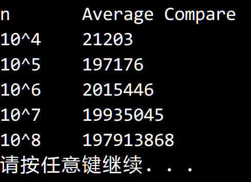

搜索解答
目前已完成到 2.5
2.5.7
上次更新：2019-02-11 发现了题解错误/代码缺陷/排版问题？请点这里：如何：提交反馈 。
题目
2.5.7
用 select() 找出 N 个元素中的最小值平均大约需要多少次比较？
解答
参考书中给出的快速排序性能分析方法（中文版 P186，英文版 P293）。
设 $ C_n $ 代表找出 $ n $ 个元素中的最小值所需要的比较次数。
一次切分需要 $ n+1 $ 次比较，下一侧的元素个数从 $ 0 $ 到 $ n-1 $ 都有可能，
于是根据全概率公式，有：
$$
\begin{eqnarray}
C_n&=&\frac {1}{n} (n+1) +\frac{1}{n} (n+1+C_1)+ \cdots + \frac{1}{n}(n+1+C_{n-1}) \\
C_n&=&n+1+\frac{1}{n}(C_1+C_2+\cdots+C_{n-1}) \\
nC_n&=&n(n+1)+(C_1+C_2+\cdots+C_{n-1}) \\
nC_n-(n-1)C_{n-1}&=&2n+C_{n-1} \\
nC_n&=&2n+nC_{n-1} \\
C_n&=&2+C_{n-1} \\
C_n &=& C_1+2(n-1) \\
C_n &=& 2n-2 < 2n
\end{eqnarray}
$$
测试结果符合我们的预期。

附加：找出第 $ k $ 小的数平均需要的比较次数。
类似的方法也在计算快速排序的平均比较次数时使用，见 。
首先和快速排序类似，select 方法的所有元素比较都发生在切分过程中。
接下来考虑第 $ i $ 小和第 $ j $ 小的元素（$ x_i $ ，$ x_j $），
当枢轴选为 $ x_i $ 或 $ x_j $ 时，它们会发生比较；
如果枢轴选为 $ x_i $ 和 $ x_j $ 之间的元素，那么它们会被切分到两侧，不可能发生比较；
如果枢轴选为小于 $ x_i $ 或大于 $ x_j $ 的元素，它们会被切分到同一侧，进入下次切分。
但要注意的是，select 只会对切分的一侧进行再切分，另一侧会被抛弃（快速排序则是两侧都会再切分）。
因此我们需要将第 $ k $ 小的数 $ x_k $ 纳入考虑。
如果 $ x_k>x_j>x_i $ ，且枢轴选了 $ x_k $ 到 $ x_j $ 之间的元素，切分后 $ x_i $ 和 $ x_j $ 会被一起抛弃，不发生比较。
如果 $ x_j > x_k > x_i $ ，枢轴的选择情况和快速排序一致。
如果 $ x_j > x_i > x_k $ ，且枢轴选了 $ x_i $ 到 $ x_k $ 之间的元素，切分后 $ x_i $ 和 $ x_j $ 会被一起抛弃，不发生比较。
综上我们可以得到 $ x_i $ 和 $ x_j $ 之间发生比较的概率 $ \frac{2}{\max(j-i+1, k-i+1,j-k+1)} $ 。
我们利用线性规划的知识把最大值函数的区域画出来，如下图所示：
对蓝色区域积分得：
$$
\begin{eqnarray}
&&\int_{0}^{k} dj \int_{0}^{j} \frac{2}{j-k+1} di \\
&=& 2 \int_{0}^{k} \frac{j}{j-k+1} dj \\
&<& 2 k
\end{eqnarray}
$$
对红色区域积分得：
$$
\begin {eqnarray}
&& \int_{k}^{n} di \int_{i}^{n} \frac{2}{k-i+1} dj \\
&=& 2\int_{k}^{n} \frac{n-i}{k-i+1} di \\
&<& 2(n-k)
\end {eqnarray}
$$
对绿色区域积分得：
$$
\begin{eqnarray}
&& \int_{0}^{k}di\int_{k}^{n} \frac{2}{j-i+1} dj \\
&<& \int_{0}^{k}di\int_{k}^{n} \frac{2}{j-i} dj \\
&=& 2\int_{0}^{k} \ln (n-i) di - 2\int_{0}^{k} \ln(k-i)di \\
&=& 2i\ln(n-i) \bigg|_{0}^{k} + 2\int_{0}^{k}\frac{i}{n-i} di -
\left[ i\ln(k-i) \bigg|_{0}^{k} + 2\int_{0}^{k} \frac{i}{k-i} di \right] \\
&=& 2k\ln(n-k)+2\int_{0}^{k}\frac{n}{n-i}-1 di -2\int_{0}^{k} \frac{k}{k-i}-1 di \\
&=& 2k\ln(n-k)+2\int_{0}^{k}\frac{n}{n-i} di -2k - 2\int_{0}^{k} \frac{k}{k-i} di +2k \\
&=& 2k\ln(n-k) -2n\ln(n-i) \bigg|_{0}^{k} +2k\ln(k-i)\bigg|_{0}^{k} \\
&=& 2k\ln(n-k)-2n\ln(n-k)+2n\ln n -2k\ln k
\end{eqnarray}
$$
全部相加得到：
$$
\begin{eqnarray}
&& 2k+2(n-k)+2k\ln(n-k)-2n\ln(n-k)+2n\ln n -2k\ln k \\
&=& 2n + 2k\ln(n-k)-2n\ln(n-k)+2n\ln n -2k\ln k \\
&=& 2n + 2k\ln(n-k)-2n\ln(n-k)+2n\ln n-2k\ln k +2k\ln n-2k\ln n \\
&=& 2n + 2k\ln n-2k\ln k+2n\ln n-2n\ln(n-k) - 2k\ln n + 2k\ln(n-k) \\
&=& 2n + 2k\ln \left(\frac{n}{k} \right)+2n\ln\left(\frac{n}{n-k} \right) - 2k\ln\left(\frac{n}{n-k} \right) \\
&=& 2n+2k\ln\left(\frac{n}{k}\right)+2(n-k)\ln\left(\frac{n}{n-k} \right)
\end{eqnarray}
$$
于是得到了命题 U 中的结果（中文版 P221，英文版 P347）。